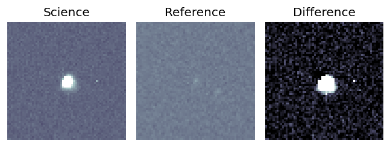
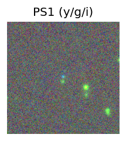
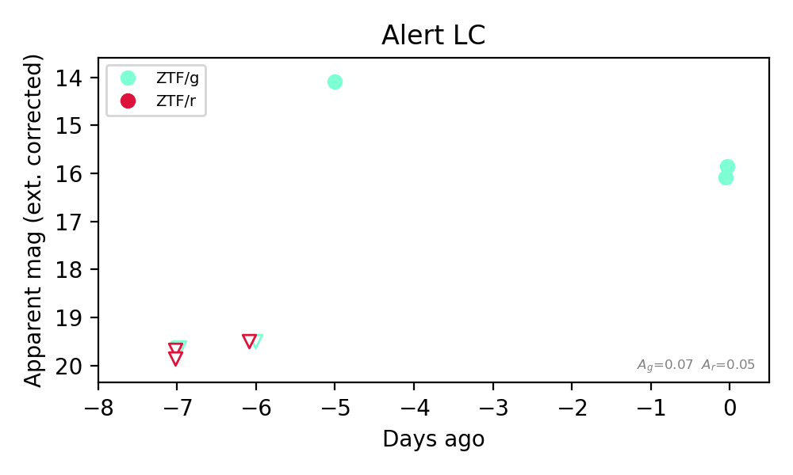

Candidate List 20261102Last night — ZTF: 405 passed basic cuts (1 young) · LSST: 0 passed basic cuts (0 young)Previous Day Next Day
Section 1: New Sources (age<1d) Section 2: Old (1-5d) sources observed last nightplaceholder
Section 2: Older Sources Observed Last Night (1)
0. [ZTF] ZTF26acdjmao (Afterglow?) [Back to Top] [Share] [Trigger Swift] [Fritz Alert] [Fritz Source] [Lasair]RA, Dec: 134.48525, 49.33088 8h57m56.46s, 49d19m51.15sGalactic (l, b): 169.83479, 40.54078 ext(g-r) = 0.022

TESS: Sectors [21 47]
PS1: 0 sources in 3 arcsec
LegacySurvey: 1 sources in 3 arcsec Closest: d = 0.24 arcsec, 58.3 deg (east of north) photoz=0.74 (68% bounds 0.55, 1.09), type=PSF peak abs mag (ext. corrected) = -29.27 (68% bounds -28.46, -30.3)

Rise Rate:
g: 5.4 mag/day
Fade Rate:
g: 0.37 mag/day